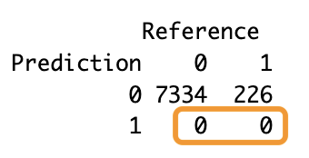
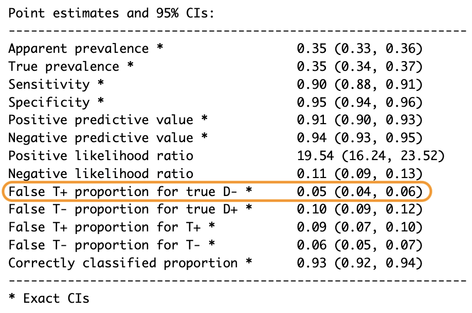
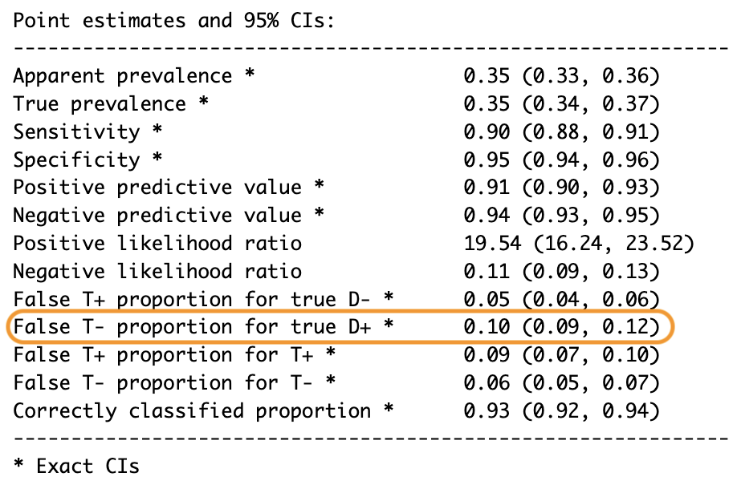
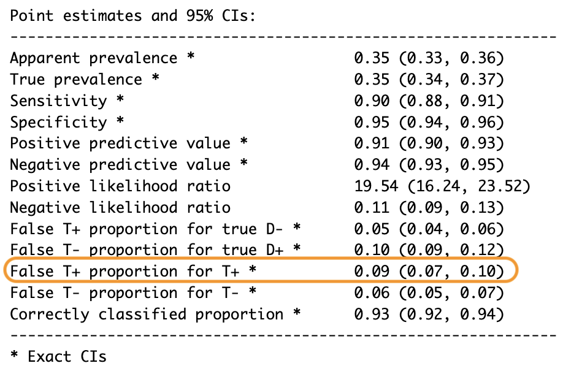
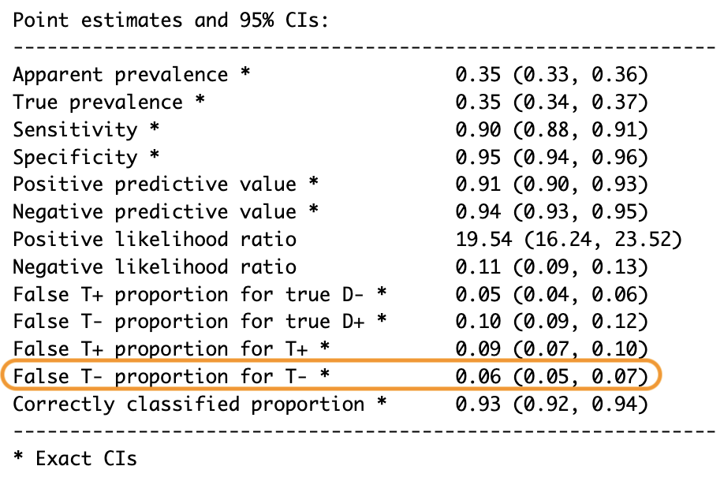

Hablemos de precisión durante un momento. Un modelo con alta precisión parece una victoria, ¿verdad? Pero aquí está el problema: la precisión puede ser engañosa. Trata cada predicción como igualmente importante, y a menudo oculta errores cuando los conjuntos de datos están desequilibrados.
Warning in confusionMatrix.default(factor(predicciones), factor(actual)):
Levels are not in the same order for reference and data. Refactoring data to
match.
ejemplo
Confusion Matrix and Statistics
Reference
Prediction 0 1
0 7334 226
1 0 0
Accuracy : 0.9701
95% CI : (0.966, 0.9738)
No Information Rate : 0.9701
P-Value [Acc > NIR] : 0.5177
Kappa : 0
Mcnemar's Test P-Value : <2e-16
Sensitivity : 1.0000
Specificity : 0.0000
Pos Pred Value : 0.9701
Neg Pred Value : NaN
Prevalence : 0.9701
Detection Rate : 0.9701
Detection Prevalence : 1.0000
Balanced Accuracy : 0.5000
'Positive' Class : 0
Imagina que estás diagnosticando una enfermedad donde solo el 3% de los casos son positivos. Un modelo podría obtener una precisión del 97.01% simplemente diciendo “no hay enfermedad” todo el tiempo.

Figura 1: Si el modelo predice “no hay enfermedad” cada vez.
Seguro, técnicamente está en lo correcto la mayoría de las veces, pero falla por completo al punto de encontrar esos casos positivos críticos que realmente importan (los 226 casos).
Ahí es donde entran las métricas de error. Métricas como la
llegan más a fondo. Muestran exactamente dónde lucha el modelo, ayudándonos a entender cómo maneja tanto las clases fáciles como las difíciles.
Así que la precisión no siempre es útil. La clave real para construir mejores modelos y tomar decisiones más inteligentes radica en aceptar los errores. Ahí es donde ocurre la magia.
Cada modelo de clasificación tiene un objetivo: cometer la menor cantidad de errores posibles. Ahí es donde entra la tasa de error, también llamada tasa de malclasificación.
Tasa de Error o Malclasificación
En términos sencillos, la tasa de error es la proporción de predicciones incorrectas. Para calcularla, sumamos los falsos positivos y los falsos negativos, y luego dividimos entre el número total de casos.
\[
\text{Tasa de Error}=\frac{FP+FN}{total}
\tag{1}\]
Piensa en los coches autónomos: la tasa de error muestra cuántas veces el coche toma una mala decisión, una métrica que podría significar la vida o la muerte.
Aquí tienes un truco útil: la tasa de error es simplemente lo contrario de la precisión. Resta la precisión de uno y ya tienes la tasa de error.
\[
\text{Tasa de Error}=1-Precisión
\]
Hasta 2025, no hay una función integrada para la tasa de malclasificación, al menos que yo sepa. Si encuentras una, compártelo. Hasta entonces, aquí tienes cómo puedes crear tu propia función.
tasa_error <-function(TP, TN, FP, FN){ (FP + FN) / (TP + TN + FP + FN)}# Estos datos NO son los mismos del ejemplo anteriortasa_error(TP =46, TN =115, FP =8, FN =39)
[1] 0.2259615
Las métricas restantes también se pueden calcular restando métricas conocidas de uno.
Tasa de falsos positivos
La tasa de falsos positivos se puede calcular restando la especificidad de uno.
\[
FPR=1-Especificidad=\frac{FP}{TN+FP}
\tag{2}\]
La tasa de falsos positivos es el porcentaje de verdaderos negativos clasificados incorrectamente como positivos. En términos sencillos, es cuántas veces se etiqueta incorrectamente a personas sanas como enfermas.
Para calcular la tasa de falsos positivos a mano, solo necesitas la columna derecha de la matriz de confusión. Y para hacerlo aún más rápido, puedes usar la función de epi.tests() del paquete epiR, incluso con intervalos de confianza del 95% como bonificación.
library(myfinance)
Registered S3 method overwritten by 'quantmod':
method from
as.zoo.data.frame zoo
modelo <-main_analysis()
[1] "Iniciando el análisis principal..."
[1] "Cargando datos..."
[1] "Datos cargados exitosamente. Número de filas: 4594"
[1] "Creando variables predictoras..."
[1] "Variables predictoras creadas exitosamente."
[1] "Creando tabla de datos..."
[1] "Tabla de datos creada exitosamente."
[1] "Dividiendo datos en train y test..."
[1] "Datos divididos exitosamente. Train: 3675 Test: 919"
[1] "Normalizando datos..."
[1] "Normalizados"
[1] "Datos normalizados exitosamente."
[1] "Construyendo y entrenando el modelo..."
Warning: glm.fit: fitted probabilities numerically 0 or 1 occurred
[1] "Modelo construido y entrenado exitosamente."
[1] "Haciendo predicciones para train..."
[1] "Predicciones para train completadas."
[1] "Evaluando modelo en train..."
[1] "Evaluación en train:"
[1] "Haciendo predicciones para test..."
[1] "Predicciones para test completadas."
[1] "Evaluando modelo en test..."
[1] "Evaluación en test:"
[1] "Análisis completado exitosamente."
[1] "Proceso finalizado."
calculate_results <-function(model, data) {# Realizar predicción predictions <-predict(model, data)# Convertir predicciones en probabilidades probabilities <-1/ (1+exp(-predictions))# Determinar la dirección basada en el umbral de 0.5 direction <-ifelse(probabilities >0.5, 1, 0)# Crear la matriz de confusión confusion <-confusionMatrix(factor(direction), factor(data$Direction), mode ="everything")# Devolver los resultadoslist(predicted_direction = direction,confusion_matrix = confusion,predictions = predictions )}train_results <-calculate_results(modelo$modelo, modelo$normalized$train)train_confusion <- train_results$confusion_matrixepiR::epi.tests(train_confusion$table)
Outcome + Outcome - Total
Test + 1152 108 1260
Test - 134 2248 2382
Total 1286 2356 3642
Point estimates and 95% CIs:
--------------------------------------------------------------
Apparent prevalence * 0.35 (0.33, 0.36)
True prevalence * 0.35 (0.34, 0.37)
Sensitivity * 0.90 (0.88, 0.91)
Specificity * 0.95 (0.94, 0.96)
Positive predictive value * 0.91 (0.90, 0.93)
Negative predictive value * 0.94 (0.93, 0.95)
Positive likelihood ratio 19.54 (16.24, 23.52)
Negative likelihood ratio 0.11 (0.09, 0.13)
False T+ proportion for true D- * 0.05 (0.04, 0.06)
False T- proportion for true D+ * 0.10 (0.09, 0.12)
False T+ proportion for T+ * 0.09 (0.07, 0.10)
False T- proportion for T- * 0.06 (0.05, 0.07)
Correctly classified proportion * 0.93 (0.92, 0.94)
--------------------------------------------------------------
* Exact CIs
Para nuestro ejemplo:

Figura 2: FPR
Pero aquí está el problema: la tasa de falsos positivos tiene muchos nombres en diferentes campos. Por ejemplo, en aprendizaje automático se le llama “falso positivo”; en estadísticas, Error Tipo 1 o probabilidad de falsa alarma; en biometría, tasa de coincidencia falsa; en autenticación, tasa deaceptación falsa; en medicina y epidemiología, fracción de falsos positivos; en astronomía y astrofísica, tasa de detección espuria; e ingeniería, nivel de ruido. ¿Confuso, verdad? Pero no te preocupes, no importa cómo lo llames, la idea es la misma: ¿Cuántas veces cometemos errores al decir “sí” cuando la respuesta es realmente “no”?
Pero, ¿por qué importa la tasa de falsos positivos? Porque las falsas alarmas pueden ser costosas o incluso peligrosas. Aquí hay algunos ejemplos del mundo real:
Las falsas alarmas de incendio en Australia significan que los bomberos pueden correr a lugares donde no hay incendios, perdiendo tiempo y recursos, y posiblemente retrasando las respuestas a emergencias reales.
En atención médica, una alta tasa de falsos positivos lleva a tratamientos innecesarios, como recetar medicamentos a pacientes sanos, lo que puede dañarlos y malgastar recursos médicos.
Si hay una tasa de falsos positivos, también debe haber una tasa de falsos negativos, ¿verdad? Correcto. Vamos a sumergirnos en eso.
Tasa de falsos negativos
La tasa de falsos negativos es lo contrario de la tasa de falsos positivos. Mientras que la tasa de falsos positivos nos dice cuántas veces decimos “sí” cuando la respuesta es “no”, la tasa de falsos negativos nos dice cuántas veces decimos “no” cuando la respuesta es realmente “sí”. En términos sencillos, la tasa de falsos negativos mide el porcentaje de positivos reales clasificados incorrectamente como negativos, o cuántas veces se identifica incorrectamente a personas enfermas como sanas.
Al igual que con la tasa de falsos positivos, la tasa de falsos negativos tiene muchos nombres confusos en diferentes campos. En medicina y epidemiología, se le llama “tasa de omisión” o”fracción de falsos negativos”; en estadísticas, Error Tipo 2 o probabilidad de omisión; en aprendizaje automático, 1-Sensibilidad o 1-Recall. Y hay más nombres, lo cual es molesto. Pero todos se reducen a una sola idea: ¿Cuántas veces fallamos al detectar algo que realmente está allí?
Para calcular la tasa de falsos negativos, nos enfocamos en la columna izquierda de la matriz de confusión. Otra forma es restar 1-Sensibilidad o dividir el número de falsos negativos entre la suma de falsos negativos y verdaderos positivos.
\[
FNR=1-Sensibilidad=\frac{FN}{FN+TP}
\tag{3}\]
Al igual que con la tasa de falsos positivos, podemos calcular la tasa de falsos negativos y sus intervalos de confianza del 95% usando la función de epi.tests().

Figura 3: FNR
Aquí está la parte alarmante: la tasa de falsos negativos, o Error Tipo 2, a menudo es mucho peor que la tasa de falsos positivos o Error Tipo 1. Déjame explicarte:
Imagina que te diagnostican cáncer, pero después de tres pruebas más, el diagnóstico es desestimado. Celebras, ¡estás absolutamente sano! Ese es un Error Tipo 1, aterrador pero no fatal.
Ahora imagina esto: tu primera prueba da negativo, así que celebras, pero más tarde empiezas a sentirte mal. Tres nuevas pruebas confirman que tienes cáncer. Además, debido a esa falsa negativo inicial, el cáncer ha progresado de forma irreversible. Ese es un Error Tipo 2, más aterrador y literalmente fatal. Por eso necesitamos descubrir cualquier falsa negativo lo antes posible.
Tasa descubrimiento falso
Y hablando de descubrimientos falsos, la siguiente métrica crucial que todo científico de datos debe conocer es la tasa de descubrimiento falso. En pocas palabras, la tasa de descubrimiento falso es el porcentaje de predicciones positivas que son realmente falsos positivos entre todas las predicciones positivas. En términos médicos, es el porcentaje de individuos sanos identificados incorrectamente como enfermos.
Para calcular la tasa de descubrimiento falso, nos enfocamos en la fila superior de la matriz de confusión, ya que las predicciones están en las filas. Puedes computarla restando la precisión de uno o dividiendo el número de falsos positivos entre la suma de falsos positivos y verdaderos positivos.
\[
FDR=1-Precisión=\frac{FP}{TP+FP}
\tag{4}\]
En nuestro ejemplo, una tasa de descubrimiento falso del 9% significa que el 9% de todas las predicciones positivas fueron incorrectas. No está mal, pero aún hay espacio para mejorar. Nuestra confiable función epi.tests() también puede proporcionar la tasa de descubrimiento falso con intervalos de confianza exactos del 95%.

Figura 4: FDR
La tasa de descubrimiento falso juega un papel significativo en técnicas de pruebas múltiples, como correcciones de Bonferroni o valores de ajuste de Tukey ajustan los \(p-values\) cuando se realizan múltiples pruebas para controlar los errores.
Aquí está algo interesante: la tasa de descubrimiento falso mide la tasa a la que las predicciones positivas son realmente falsas. Así que la tasa de descubrimiento falso es simplemente lo contrario de cuando las predicciones positivas son correctas. Y puesto que la métrica donde las predicciones positivas son correctas se llama valor predictivo positivo (PPV), la FDR también se puede describir como lo contrario del valor predictivo positivo.
\[
FDR=1-PPV
\]
Mientras que el valor predictivo positivo nos dice cuán a menudo una predicción positiva es correcta, la tasa de descubrimiento falso nos dice cuán a menudo es incorrecta. Y si existe un opuesto del valor predictivo positivo, podrías suponer que también existe un opuesto del valor predictivo negativo, ¿verdad? A eso se le llama la tasa de omisión falsa, y nos sumergiremos en ella a continuación, la última pieza del rompecabezas para entender cómo maneja tu modelo los errores.
Tasa de omisión falsa
La tasa de omisión falsa mide la proporción de predicciones negativas que son incorrectas, lo que indica cuán confiables son esas predicciones. Por ejemplo, en pruebas médicas, la tasa de omisión falsa nos dice el porcentaje de personas enfermas clasificadas incorrectamente como sanas. En pocas palabras, la tasa de omisión falsa responde la pregunta: Cuando tu modelo predice algo negativo, ¿cuántas veces está realmente equivocado?
Para calcular la tasa de omisión falsa, nos enfocamos en la fila inferior de la matriz de confusión, donde están las predicciones negativas. Puedes computarla restando el valor predictivo negativo de uno o dividiendo el número de falsos negativos entre la suma de falsos negativos y verdaderos negativos.
\[
FOR=1-NPV=\frac{FN}{TN+FN}
\tag{5}\]
En nuestro ejemplo, el 25% de todas las predicciones negativas fueron incorrectas. Eso es un gran problema, especialmente en situaciones donde perder un caso positivo pueda tener consecuencias graves. La tasa de omisión falsa también se puede calcular usando la función epi.tests().

Figura 5: FOR
Ahora que hemos cubierto todas las métricas clave de error, es probable que te preguntes: ¿Hay una manera de combinar estas ideas en una sola medida de lo bueno que es realmente una prueba o un modelo? Y la respuesta es sí. Se llama razones de verosimilitud: la razón de verosimilitud positiva y la razón de verosimilitud negativa. Juntas, te dan una imagen completa del poder diagnóstico de tu modelo y son especialmente útiles para conjuntos de datos desequilibrados, donde métricas tradicionales como precisión o recall pueden fallar. De hecho, estas métricas son tan esenciales que le he dedicado otro post. Confía en mí, no quieres perdértelo.
Cómo citar
BibTeX
@online{chiquito_valencia2025,
author = {Chiquito Valencia, Cristian},
title = {La Ilusión de La Precisión: {¿Cómo} Detectar Los Errores
Ocultos En Tus Datos?},
date = {2025-04-11},
url = {https://cchiquitovalencia.github.io/posts/2025-04-11-predictions_on_stocks3/},
langid = {en}
}